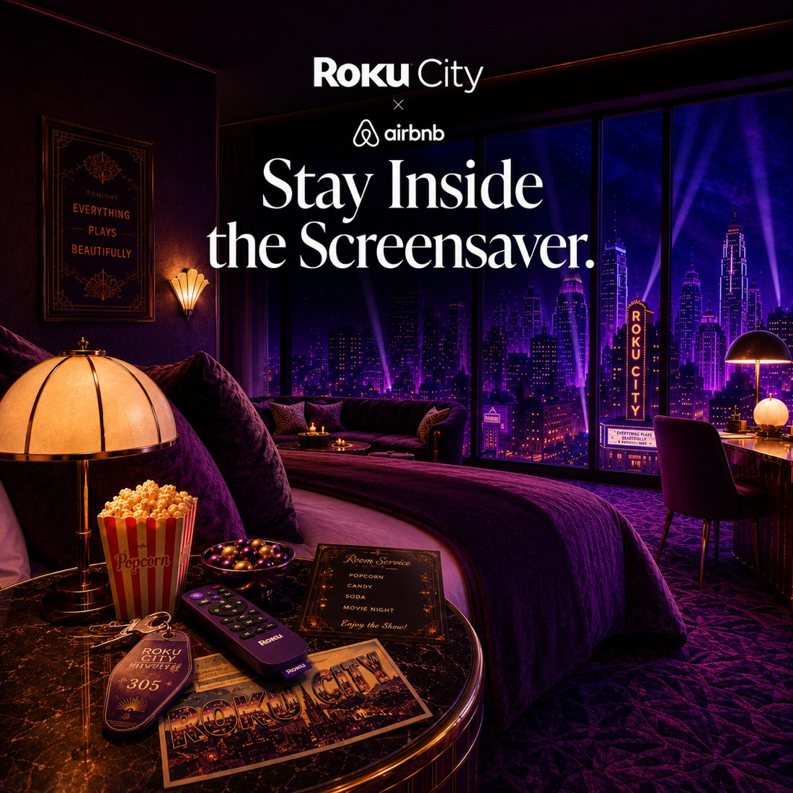
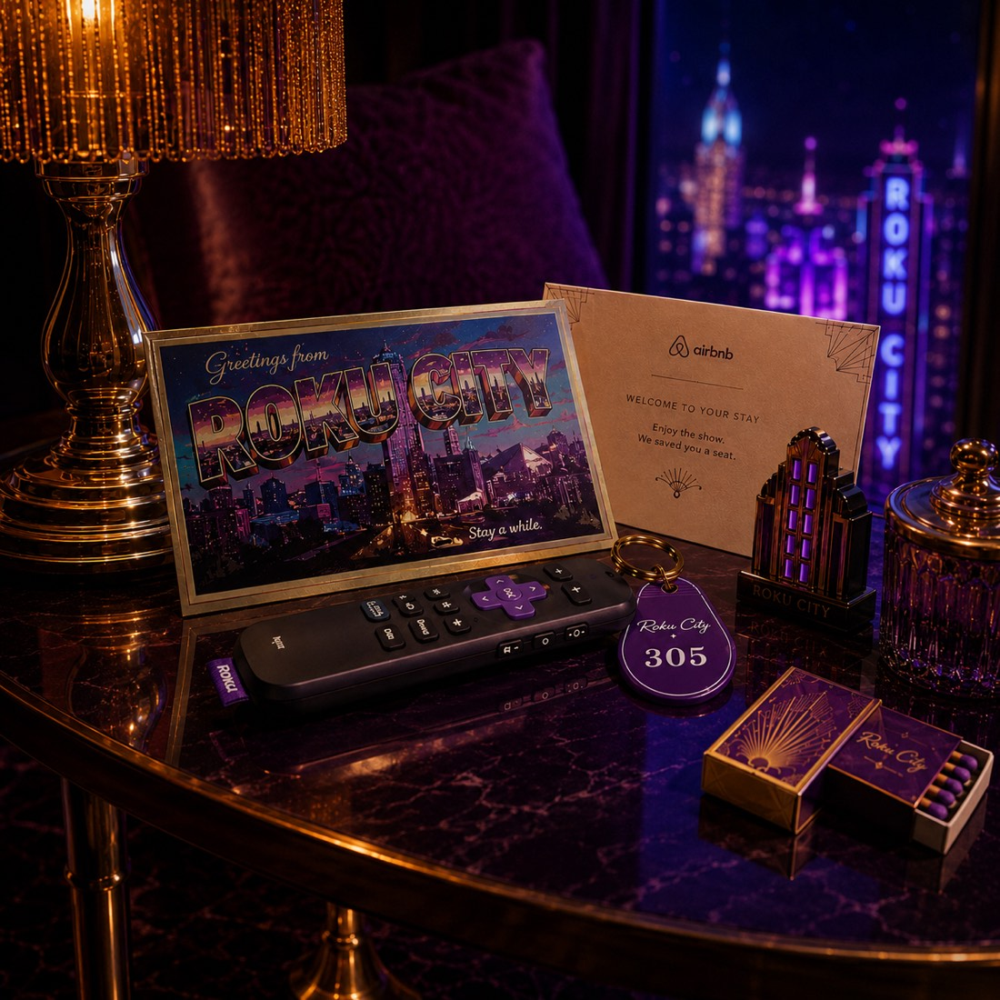
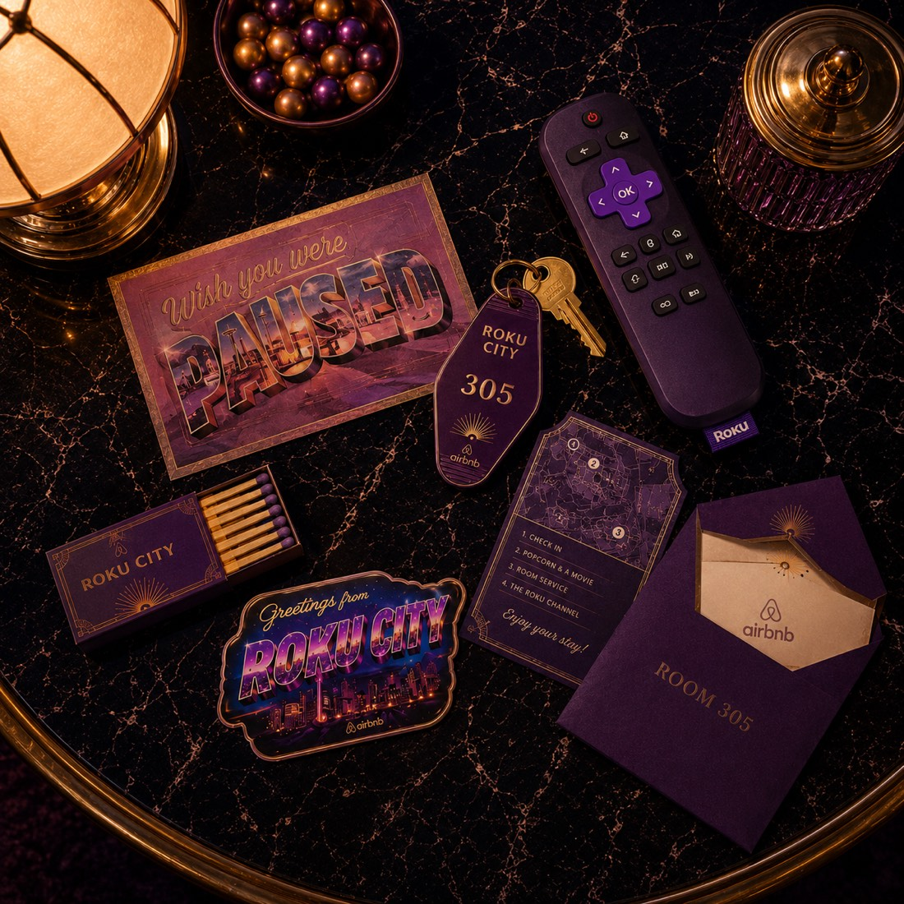
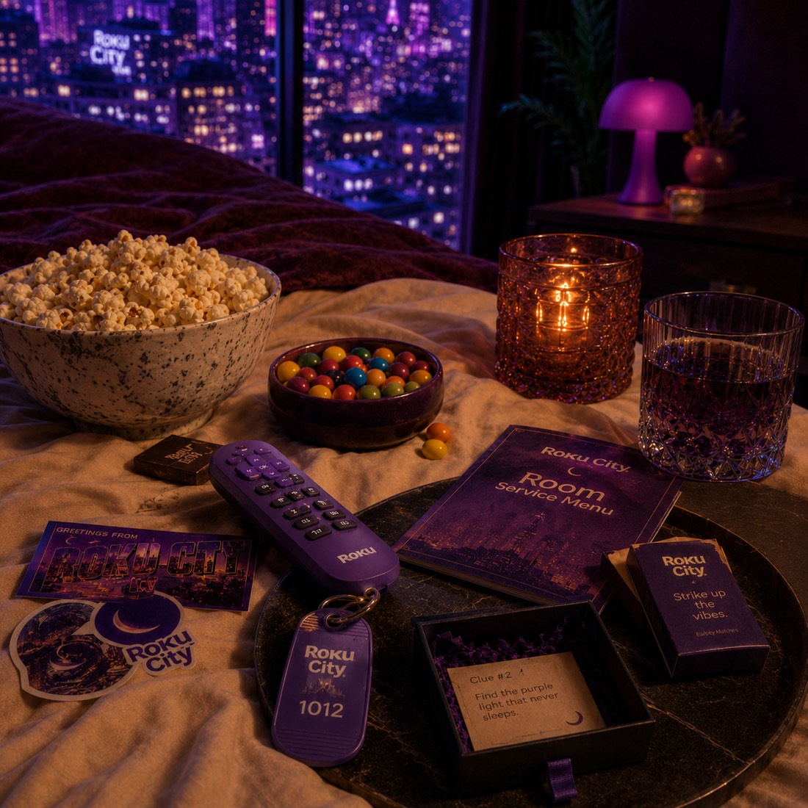

Roku City × Airbnb · Speculative campaign
Stay Inside
the Screensaver
What if you could book a one-night stay inside Roku City? A limited-edition Airbnb experience that turns the screensaver millions stare at into a place you can actually check into.

The Insight
Roku City is one of the most familiar fictional places in pop culture, but nobody has ever actually been there.
Millions of people have stared at that purple skyline from their couches, hunting for Easter eggs, recognizing it instantly, somehow developing real emotional attachment to a screensaver. It already feels like a place people know.
And it lands now for a reason. In an era where everything is going digital, infinite, and AI-generated, people are craving the opposite: textured, tactile, real experiences they can touch. This campaign takes a passive digital product and turns it into a physical one. Passive recognition becomes active brand love.
Why Airbnb
Airbnb has already made Barbie's Malibu DreamHouse, Shrek's Swamp, castles, and fantasy homes bookable. They've proven, again and again, that people want to step inside fictional worlds.
Roku City is the perfect next one: a place millions recognize, but no one has ever checked into. Roku gets cultural relevance and emotional attachment; Airbnb gets a viral pop-culture stay.
The Stay
Part sleepover, part movie night, part Easter-egg hunt.
A themed space
A dreamy purple suite inspired by the Roku City skyline.
A movie night
Personalized watchlist, snacks, projector, and the coziest possible setup. The whole point is staying in.
An Easter-egg hunt
The reason people love Roku City is the hunt. Hidden references, clues, and secret compartments reward the people who know it a little too well.
A collectible stay
Keycards, postcards, guidebooks, matchbooks, stickers, room-service menus. Souvenirs from a city that doesn't technically exist.
The Hero Object
The remote is the key.
Your room key is a custom purple Roku remote. The most meme'd object Roku owns becomes the hero of the stay: it checks you in, starts the movie, and unlocks the first clue.
The Details
Every surface is designed to be explored, and to be filmed. The suite gives guests a million tiny things to discover and post. That's the real campaign value: the whole experience is built to be shared.



Launch Lines
Wish you were paused.
You've stared at it for hours. Now you can stay there.
The most familiar city you've never visited is finally taking reservations.
Press Home to check in.
The Film
The TikTok I made walking through the concept, in my own editing style.
View on TikTokIn One Line
A fictional city you've stared at for years, finally made bookable.
Speculative concept. Not affiliated with, endorsed by, or commissioned by Roku, Inc. or Airbnb, Inc. Brand names are referenced as cultural artifacts for a creative-direction exercise. All concept, copy, art direction, and design by Brooklyn Gibbs.